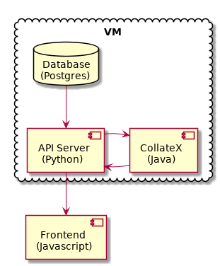

Collation Tool¶
Description of the collation tool and the processing of the TEI files.
Pre-Processing of the TEI files¶
We extract every chapter of every capitular from all manuscripts and store them separately in the Postgres database on the application Server. The text stored in the database is already normalized.
If a manuscript contains more than one copy of a chapter, all copies are extracted. If a corrector hand was active in the chapter, an original and a corrected version are both extracted. The collation tool knows about all these versions and offers them to the user.
![skinparam backgroundColor transparent
skinparam DefaultTextAlignment center
skinparam componentStyle uml2
database "Manuscript files\n(XML+TEI)" as tei
note left of tei: AFS:publ/mss/*.xml
cloud "VM" {
component "Cron" as cron
component "Makefile" as make
component "mss-extract-chapters.xsl" as saxon
database "Chapter files\n(plain text)" as chapters
note left of chapters: AFS:publ/cache/extracted/*/*.txt
component "import.py" as import
database "Database\n(Postgres)" as db
}
tei --> saxon
saxon --> chapters
chapters --> import
import --> db
cron .> make
make .> saxon
make .> import](_images/plantuml-a6c774ee1bc4c5cf81c5848a6ace87462c515f50.png)
Data flow during pre-processing
The Makefile is run by cron on the Capitularia VM at regular intervals.
The manuscript files are in the AFS. The AFS is mounted onto the VM.
The Makefile knows all the dependencies between the files and runs the appropriate tools to keep the database up-to-date with the manuscript files.
All intermediate files can be found in the cache/extracted directory. One directory per manuscript, and one file per chapter, copy, and hand. The intermediate files are normalized, eg. have V replaced by U.
The import.py script imports the intermediate text files into the database.
Collation¶
The collation tool is divided in two parts, one frontend written in JavaScript and the Vue.js library, and one backend application server written in Python. The backend retrieves the chapters to collate from the database and calls the CollateX executable to do the actual collation. The results are sent to the frontend that does the formatting for display.

Data flow during collation
The collation unit is the chapter, so that only short texts need to be collated, saving much processing time.
We aim to rewrite all the functionality we need of CollateX in Python or Javascript and then drop the dependency on CollateX.
The Wordpress cap-collation-user plugin delivers the Javascript client to the user. After that, all communication happens directly between the client and the application server.
Custom Version of CollateX¶
Our custom version of CollateX uses a custom word comparison function.
The stock version of CollateX [CollateX] uses word comparison functions that only return binary values, signalling either a match or a mismatch. Our custom version uses a word comparison function that returns a similarity value between 0 and 1. This works much better when aligning variant orthographies of the same word.
In our custom CollateX we also implemented an enhancement of the Needleman-Wunsch algorithm by Gotoh. [Gotoh1982]
Word Comparison Function¶
The word comparison function returns a similarity value between 0 and 1.
All words in the input texts are split into sets of trigrams. This is done only once. The trigrams are obtained by first prefixing and suffixing the word with two spaces respectively, then cutting the resulting string it into all possible strings of length 3. This means that trigrams may partially overlap each other.
The resulting sets of trigrams are then used in the similarity calculation.
To calculate the similarity between two words, a set is built containing only the trigrams common to both words. The magnitude of this set is then compared against the number of trigrams in both words:
similarity = 2.0 * triAB.size() / (triA.size() + triB.size());
The similarity based on trigrams was chosen because its calculation can be done in O(n) time whereas a similarity based on Levenshtein distance needs O(n²) time. The sets of trigrams for each input word are calculated only once and if you presort the trigrams in these sets, the common set can be found in O(n) time. To be implemented: in a first step gather all trigrams, give each one an integer id, and later operate on the ids only. (Maybe hash each trigram onto a value 0..63 and build a bitmask for each word, later operate on the masks only.)
- Gotoh1982
Gotoh, O. 1982, An Improved Algorithm for Matching Biological Sequences, J. Mol. Biol. 162, 705-708 http://jaligner.sourceforge.net/references/gotoh1982.pdf
- CollateX
Dekker, R.H. et al. 2010-2019, CollateX – Software for Collating Textual Sources, https://collatex.net/